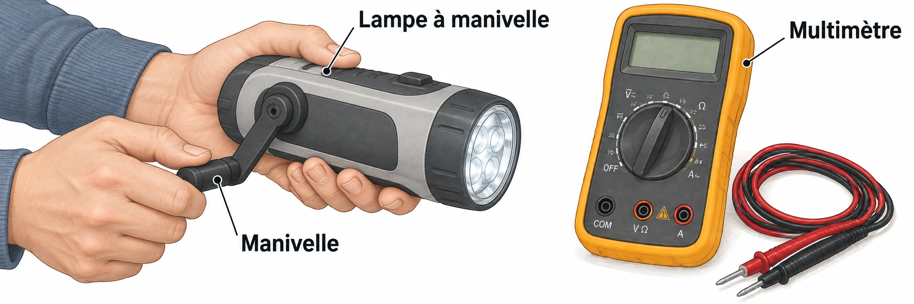

OBSERVER · EXPÉRIMENTER · EXPLIQUER
La lampe à manivelle
Explore une lampe dont la batterie a reçu de l’énergie. La manivelle représente une recharge symbolique.

✎ Garde ta feuille à côté de toi.Ordinateur : manipulations et mesures simulées. Papier : relevés, réponses, calculs et croquis. Matériel réel : essai complémentaire si disponible.
Des observations pour expliquer
- Q1–Q2 : dessine le trajet et nomme les conversions sur ta feuille.
- Q3–Q4 : distingue ressource, stockage et forme d’énergie ; justifie le choix pour la nuit.
Appuie ton explication sur une valeur, un changement observé ou une comparaison. Distingue ce que montre le modèle et ce qui reste à vérifier.